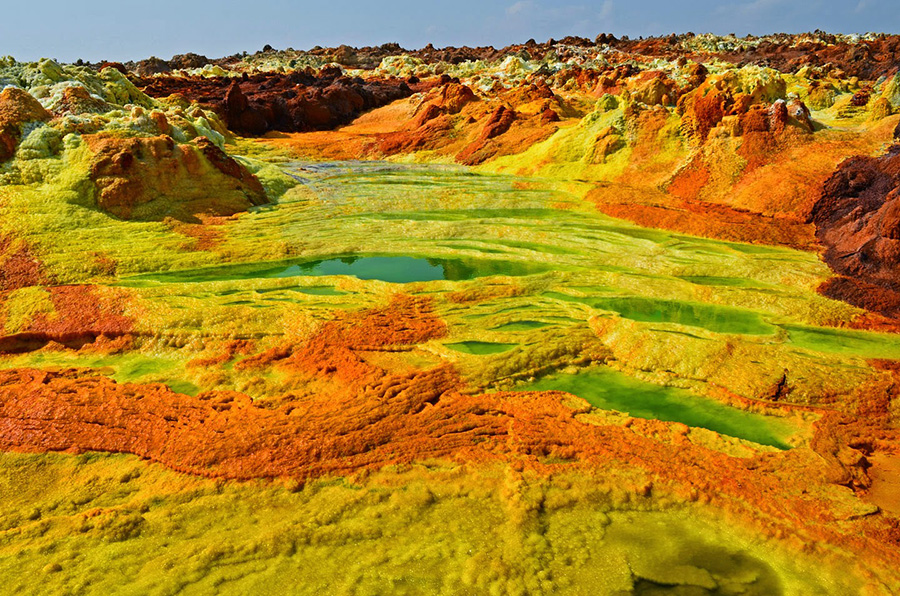
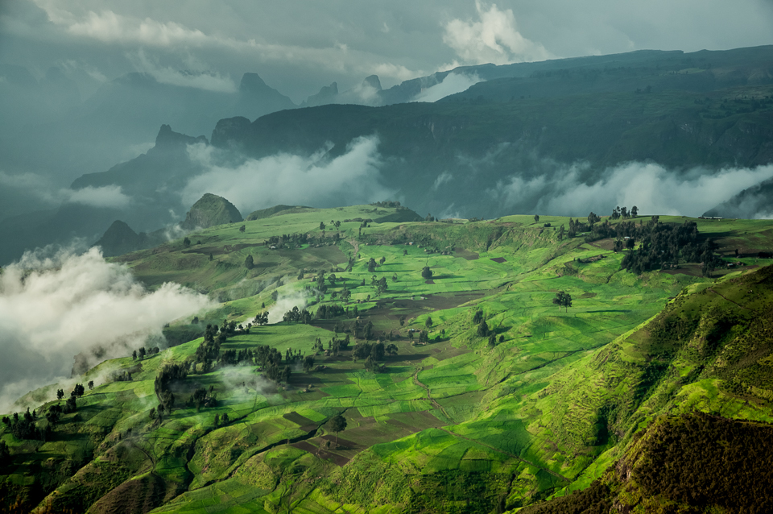

En Etiopía hay nueve parques naturales declarados, y viajar por el país supone encontrarse con tal riqueza natural que nos hace olvidar el mundo contaminado en el que vivimos. Cuando uno recorre cultivos, bosques, vegetación tropical, desiertos y la fascinante sabana africana, salpicada de acacias gigantes, se va topando con todo tipo de animales, algo chocante para un europeo y más si es urbanita.
Hay muchas variedades de antílopes, unos chiquitillos como mascotas y otros poderosos que corren con estrépito. Es fácil toparse con grandes y pequeños primates, generalmente descarados y curiosos. También es frecuente ver tortugas de tierra que caminan a su aire por las carreteras; y lagartos gigantescos, serpientes furtivas… Y todo esto se lo va uno encontrando con solo viajar sin prisa en un todoterreno por las polvorientos pistas de Etiopía.
Dicen que Etiopía es el destino favorito de los ornitólogos y observadores de aves de todo el mundo. No solo porque al parecer este país tiene el mayor número de especies endémicas, sino porque cuenta con más de 400 variedades de pájaros, habitualmente muy confiados. Junto con Kenia y Tanzania, Etiopía tiene la diversidad natural más impresionante del planeta, con la ventaja de que no es un país turístico.